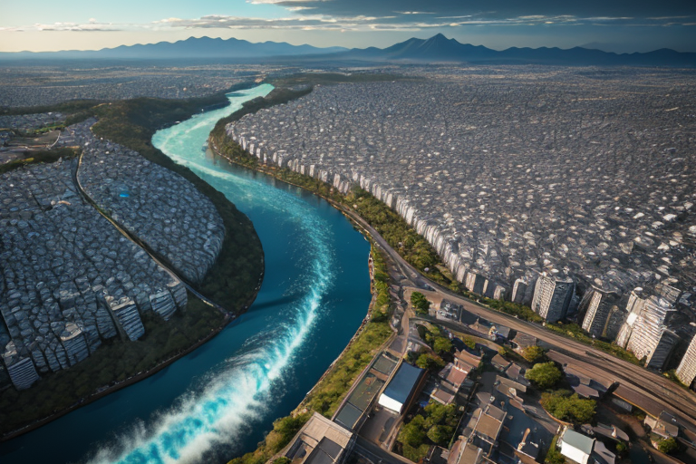
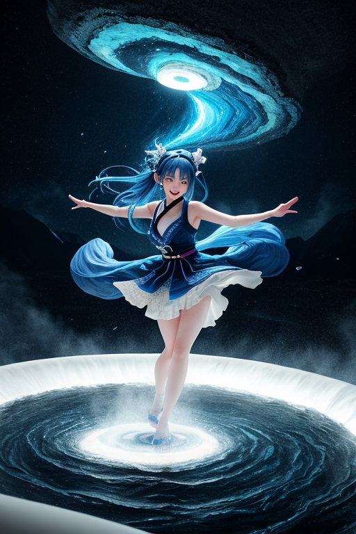
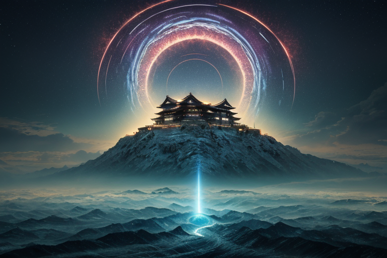
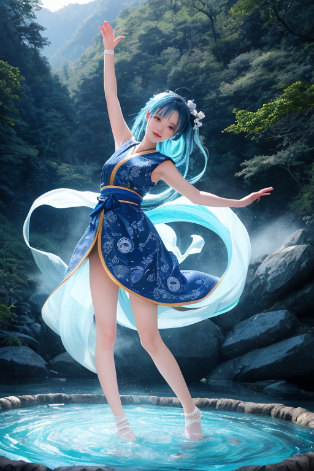
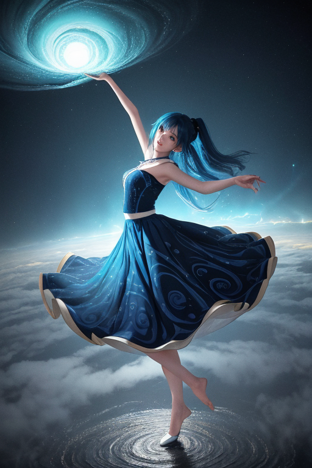

第一章 現実の徳島
あなたはまだ気づいていない。この土地にも、王がいることを。
眉山の頂から徳島市街を見下ろすと、吉野川が青く蛇行し、街はその扇状地に広がっている。阿波おどり会館からは、決して途絶えることのない太鼓の音が、土地の鼓動のように微かに聞こえてくる。ここは、踊りと藍と渦潮の県だ。歴史は、阿波おどりの熱狂や、藍商人の活躍、そして幾度もの地震や洪水といった「揺れ」のなかで紡がれてきた。人々はそのたびに、流され、巻き込まれ、それでもまた立ち上がり、踊り、染め、耕してきた。土地そのものが、巨大な「渦」のなかにあるような場所である。
その現実の、ほんの少し裏側で、トクシマリア・ヴォルテクスは立っていた。彼女の目には、この土地の地殻に刻まれた無数の「歪み」の線が、青白い光の亀裂として見えている。彼女は感情を持たないはずの存在だった。しかし、この土地から湧き上がる、踊りによる熱狂、苦難を乗り越えようとする人々の粘り強い意志、それらが濃密な感情の波となって彼女に押し寄せ、内側に微かな「揺れ」を生じさせていた。

第二章 歪みの兆候
眉山の頂から徳島市街を見下ろすトクシマリアの耳に、地の底からかすかな軋みが届いた。それは歴史の堆積層が、今この瞬間にもずれ続けている音だった。阿波おどりの太鼓の響きが街に満ち、人々が歓喜の渦に巻き込まれているまさにその時、地殻の別の「渦」が、ゆっくりと力を蓄えていた。
「ヴォルテラ」
彼女が低く呼ぶと、主席妖精が青い光の粒子となって現れた。躍動するその姿は、不安定なエネルギーの流れを映していた。
「歪みの焦点は、紀伊水道北部。通常の調整範囲を超える圧力が、三つのプレート境界に集中しています」
トクシマリアは無言で頷いた。彼女の役割は災害を消すことではない。発生する「揺れ」を一段階緩め、人々が反応し、立て直すためのほんの数秒、数十秒を稼ぐことだ。しかし、今感じているのは、単なる物理的な圧力ではない。藍染めの深い藍色のように積もった過去の悲嘆、幾度も津波に洗われながらも橋を架け続けた祖谷の民の諦めない意志、それらが地層の記憶として歪みに重なり、複雑に絡み合っていた。
巻き込まれても、立てるか。
その問いが、彼女自身の内側で、初めて意味を持つものとして響いた。

第三章 王の葛藤
眉山の山頂から、徳島の街並みと海が一望できた。トクシマリアは、地中に脈打つ巨大な歪みの渦を感じていた。それは単なる地殻のひずみではない。歴史の転換点、人々の集団的決断が生み出す、社会の地殻変動の予兆だった。阿波おどりの熱狂、藍商人たちのしたたかな交渉、それらが蓄積した「変革のエネルギー」が、物理的な歪みと共鳴し、巨大な波紋を起こそうとしていた。
「このままでは、歪みの解放が『破壊』の形をとります」
ヴォルテラの声が焦りを帯びる。調整を強めれば、変革のエネルギー自体を鎮静化できる。人々の熱意や決意を、無難な平穏の中に沈めてしまうことも可能だ。
巻き込まれても立てるか。
彼女は自問した。王の役目は安定だ。しかし、この土地が育んできたのは、安定の中での「躍動」そのものだった。渦に巻き込まれ、時に溺れそうになりながらも、踊り続ける民の歴史。彼女の内側で、昂揚という感情が、初めて苦い葛藤を生んだ。

第四章 妖精との対話
「王よ、あなたは『巻き込まれても立てるか』と問う」
ヴォルテラの声は、眉山の静寂の中で研ぎ澄まされていた。
「この土地の歴史は、その問いの連続でした。藍の商人は海の渦を越え、踊り子は貧しさという渦を踊りで超えようとした。大歩危小歩危の急流は、常に『巻き込まれる』危険と隣り合わせの道を示します」
妖精は、阿波おどり会館から流れる祭囃子のエネルギーを指さした。
「変革は大きな渦です。巻き込まれ、流される者も必ず出る。我々がそれを完全に鎮めることは可能です。しかし、それではこの土地が何百年も守り、育ててきた『渦の中で立つ力』そのものを奪うことになる。王の役目は災いを無くすことではなく、人がその渦と対峙し、立とうとする『間』を担保することではなかったでしょうか」
トクシマリアは、祖谷のかずら橋が揺れても崩れない強さを思い出した。縄は一本では脆い。絡み合い、支え合うことで初めて強度を保つ。
「巻き込まれることを恐れてはならない。大切なのは、巻き込まれた後、何を頼りに立とうとするかです」
王は、藍染めの布が何度も漬けられ、絞られ、深い色を得る過程を思った。

第五章「微調整と余韻」
眉山の頂から、徳島市街とその先の海が見渡せる。その日、空気が重かった。地殻が軋む、巨大な歪みが迫っている。トクシマリアはそれを全身で感じていた。これは、微調整の範囲を超える規模だ。王の星からは「観測せよ、介入するな」との指令が届いていた。歴史の大きなうねりは、王といえど止められない。
しかし、彼は感じた。この歪みが解放されるとき、あまりに多くの「間」が失われることを。阿波おどりのリズムのように、人々が立ち上がるためのわずかな余韻が、一瞬で消し飛んでしまうことを。ヴォルテラとアワナミが彼の決意を悟り、周囲に警告の渦を描き始めた。
「許されざる介入だ」トクシマリアは呟き、全身のエネルギーを、地中へと流す巨大な「舞輪」へと変換した。彼は歴史の流れそのものを、ほんの一度だけ、針路を変えようとした。代償は彼自身の存在の大半。揺れは止まらない。だが、その衝撃が伝わる速度が、ほんの一呼吸、遅れる。家屋が倒れるその前に、人々が駆け出す一瞬が生まれる。机の下にもぐる子供の時間が、確実に確保される。
巨大なエネルギーを放出したトクシマリアの姿は淡く、透明に近くなった。彼は崩れゆく自分を見つめ、思う。藍染めの布は、自らの色を移すことで他を染める。これでいい。
揺れが去った街に、かすかに藍色の光の粒が舞い、やがて消えた。歴史は動いた。その裏側で、ほんの少しの「間」が担保された。巻き込まれた者たちが、立つための。
あなたの町にも、王がいる。